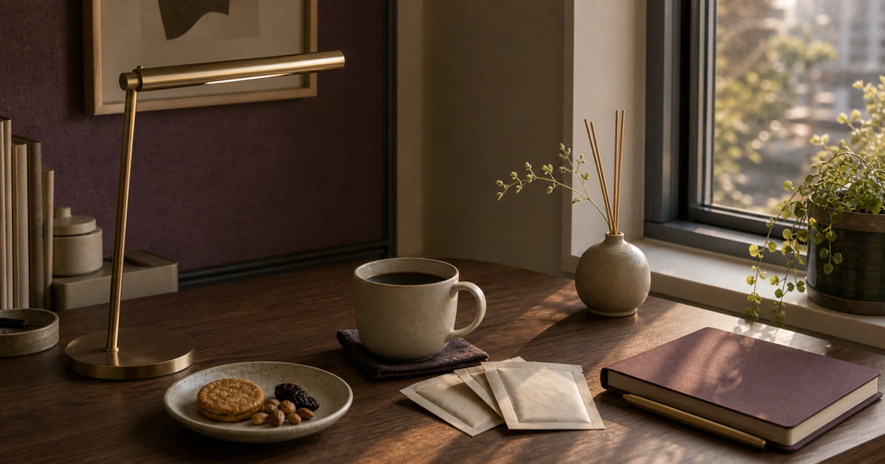

桌面下午茶儀式：咖啡杯、茶包、點心、香氛與閱讀燈
桌面下午茶儀式要控制杯具、茶包、點心、香氛和閱讀燈的份量與收尾。

桌面下午茶可以是一天裡最小的暫停，也可能變成杯子、茶包、點心袋和香氛瓶的堆積。真正有質感的儀式不是買更多，而是決定什麼時候開始、放哪裡、何時收掉。杯具、茶咖啡、點心、香氛與閱讀燈各自有角色，不能全都留在桌面中央。
杯具只留一只高頻杯
桌面最容易被杯子佔滿。工作桌建議只留一只高頻杯，其他杯盤回到餐櫃。
材質和清潔方式請回商品頁確認。
Elite Fashion 編輯團隊的具體判斷是：桌面下午茶儀式先控制份量、光線與收尾，不要讓咖啡杯、茶包、點心和香氛變成新的桌面雜物。 這讓 Home & Ceramics、Teavoya - 嘉柏茶業 與其他選項能被放回同一個生活問題裡比較，而不是只看單一商品照片。
下單前仍要回商品頁確認規格、尺寸、材質、活動、庫存與配送；若資訊不足，先暫緩，比把不確定的物品帶回家更成熟。
- 先確認使用位置與拿取頻率。
- 再看保存、清潔、線材或收納條件。
- 最後才比較品牌、活動與預算。
茶包和點心要有收尾
茶包、點心和堅果若沒有固定小盒，會在桌上越堆越多。份量小比種類多更重要。
成分、咖啡因和保存請以包裝為準。
Elite Fashion 編輯團隊的具體判斷是：桌面下午茶儀式先控制份量、光線與收尾，不要讓咖啡杯、茶包、點心和香氛變成新的桌面雜物。 這讓 Home & Ceramics、Teavoya - 嘉柏茶業 與其他選項能被放回同一個生活問題裡比較，而不是只看單一商品照片。
下單前仍要回商品頁確認規格、尺寸、材質、活動、庫存與配送；若資訊不足，先暫緩，比把不確定的物品帶回家更成熟。
- 先確認使用位置與拿取頻率。
- 再看保存、清潔、線材或收納條件。
- 最後才比較品牌、活動與預算。
Elite 嚴選
香氛不要壓過工作
香氛適合放在桌角或窗邊，不適合和杯具、文件混在一起。氣味也不應太強。
不宣稱健康、助眠或情緒效果。
Elite Fashion 編輯團隊的具體判斷是：桌面下午茶儀式先控制份量、光線與收尾，不要讓咖啡杯、茶包、點心和香氛變成新的桌面雜物。 這讓 Home & Ceramics、Teavoya - 嘉柏茶業 與其他選項能被放回同一個生活問題裡比較，而不是只看單一商品照片。
下單前仍要回商品頁確認規格、尺寸、材質、活動、庫存與配送；若資訊不足，先暫緩，比把不確定的物品帶回家更成熟。
- 先確認使用位置與拿取頻率。
- 再看保存、清潔、線材或收納條件。
- 最後才比較品牌、活動與預算。
閱讀燈要服務紙本和休息
若下午會讀紙本或手寫，閱讀燈可以固定角度；若只用螢幕，就先看反光。
亮度、色溫與用電條件請確認。
Elite Fashion 編輯團隊的具體判斷是：桌面下午茶儀式先控制份量、光線與收尾，不要讓咖啡杯、茶包、點心和香氛變成新的桌面雜物。 這讓 Home & Ceramics、Teavoya - 嘉柏茶業 與其他選項能被放回同一個生活問題裡比較，而不是只看單一商品照片。
下單前仍要回商品頁確認規格、尺寸、材質、活動、庫存與配送；若資訊不足，先暫緩，比把不確定的物品帶回家更成熟。
- 先確認使用位置與拿取頻率。
- 再看保存、清潔、線材或收納條件。
- 最後才比較品牌、活動與預算。
五分鐘收尾
杯子進水槽、茶包丟棄、點心收盒、香氛歸位、燈關閉。儀式能收尾，才不會變成雜物。
Elite Fashion 編輯團隊的判斷是：好的下午茶桌面，是讓你回到工作時更清楚，而不是更分心。
Elite Fashion 編輯團隊的具體判斷是：桌面下午茶儀式先控制份量、光線與收尾，不要讓咖啡杯、茶包、點心和香氛變成新的桌面雜物。 這讓 Home & Ceramics、Teavoya - 嘉柏茶業 與其他選項能被放回同一個生活問題裡比較，而不是只看單一商品照片。
下單前仍要回商品頁確認規格、尺寸、材質、活動、庫存與配送；若資訊不足，先暫緩，比把不確定的物品帶回家更成熟。
- 先確認使用位置與拿取頻率。
- 再看保存、清潔、線材或收納條件。
- 最後才比較品牌、活動與預算。
同主題品牌參考
Home & Ceramics
餐桌佈置、陶瓷餐具怎麼選、搬家禮物
瀏覽品牌Teavoya - 嘉柏茶業
茶禮盒推薦、冷泡茶怎麼選、上班族茶包清單
瀏覽品牌食材玩家-精選全球美味🌍
異國食材清單、家庭料理升級、節慶餐桌選物
瀏覽品牌au fait 無非｜手作香氛館
居家香氛選擇、睡前療癒儀式、交換禮物香氛清單
瀏覽品牌燈后- LED居家/智能/照明/五金/居家生活用品
小宅照明改造、LED燈怎麼選、智能照明入門、租屋燈光升級
瀏覽品牌Xinto Coffee 世界雙金咖啡烘豆廠 鑫圖咖啡
咖啡豆怎麼選、濾掛咖啡推薦、辦公室咖啡補給、咖啡禮盒
瀏覽品牌FAQ
桌面下午茶需要香氛嗎？
不一定。先讓杯具和點心有位置，再考慮香氛。
茶包和點心怎麼避免堆積？
用小盒控制份量，並設定收尾時間。
閱讀燈要放工作桌嗎？
若常讀紙本或手寫可以；只用螢幕則先看反光。
下一步建議
桌面下午茶儀式要先看杯具、茶咖啡保存、點心份量、香氛位置與閱讀燈，再比較選物。 先用本文順序縮小範圍，再回商品頁確認規格、價格、活動與庫存。
重要警語
本文含品牌／商品導購連結；商品資訊、價格、規格、活動與庫存請以商品頁公告為準。咖啡、茶、點心、香氛、燈具與杯盤不作健康、保健、助眠或療效承諾；成分、咖啡因、香味、亮度與規格請以商品頁及包裝為準。
本文含品牌／商品導購連結；若你透過部分商品連結前往選購，Elite Fashion 可能取得合作收益。本文仍以編輯判斷與使用情境整理為主，價格、規格、活動與庫存請以商品頁公告為準。